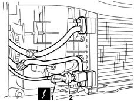
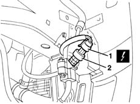
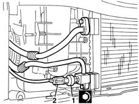
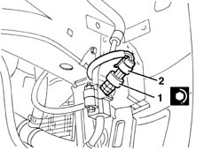

5040B14 air conditioner system multi-level pressure switch - r+r
- Path
- Procedures > 50 AUXILIARY UNITS > 5040 AIR CONDITIONING CASING AND COMPONENTS > 5040B system safety check devices > 5040B14 air conditioner system multi-level pressure switch - r+r
- Kind
- repair procedure (removal / refitting; the operation number is the code)
- Applies to
- all engines; all production periods
- Interactive page
- https://sloeber94.github.io/elrnDB-lYpsln/en/#/2429315
Applies to: engines: 1.2 8v, 1.2 16v, 1.4 16v; all production periods
 Removing
Removing
 Refitting
Refitting1. Disconnect the electrical connection for the linear pressure switch.
 | Name | Connector |
|---|---|---|
1 | Linear sensor for fans |
2. Undo and remove the linear pressure switch.

Applies to: engines: 1.3 JTD; all production periods
Removing
Refitting7055B91 Right front WHEEL ARCH LINER - R.R.
1. Working at the front of the vehicle on the right hand side, disconnect the electrical connection from the linear pressure switch.
| Name | Connector |
|---|---|---|
1 | Linear sensor for fans |
2. Undo and remove the linear pressure switch.

Applies to: engines: 1.2 8v, 1.2 16v, 1.4 16v; all production periods
Refitting
RemovingCheck that the multi-stage pressure switch is not damaged.
1. Tighten the linear pressure switch in place.
 | Fastening | Component | Ø | Value (daNm) |
|---|---|---|---|---|
1 | - | LINEAR PRESSURE SWITCH | - | 0.8 |
2. Connect the electrical connection for the linear pressure switch.

Applies to: engines: 1.3 JTD; all production periods
Refitting
RemovingCheck that the linear pressure switch is not damaged.
1. Tighten the linear pressure switch in place.
| Fastening | Component | Ø | Value (daNm) |
|---|---|---|---|---|
1 | - | LINEAR PRESSURE SWITCH | - | 0.8 |
2. Connect the electrical connection for the linear pressure switch.

Applies to: engines: 1.2 8v, 1.2 16v, 1.4 16v; all production periods
Applies to: engines: 1.3 JTD; all production periods
Topics linked from this page (4)
- 4450B04 right front wheel r r
- 7055B91 Right front WHEEL ARCH LINER - R.R.
- 7210E10 R.R. FRONT BUMPER
- K120 Linear sensor for fans